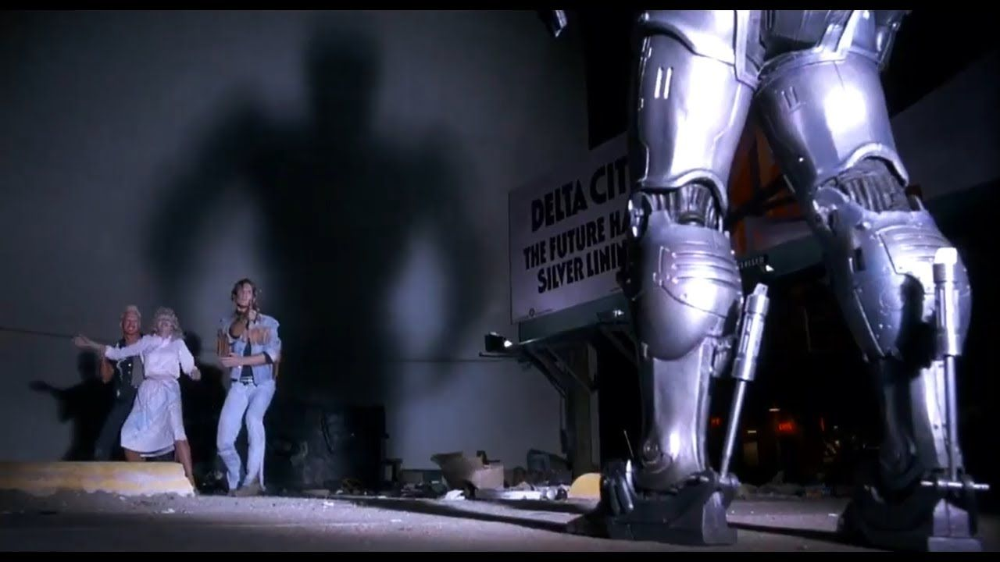
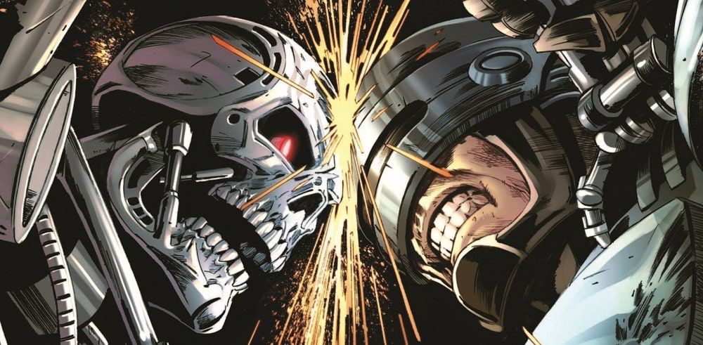
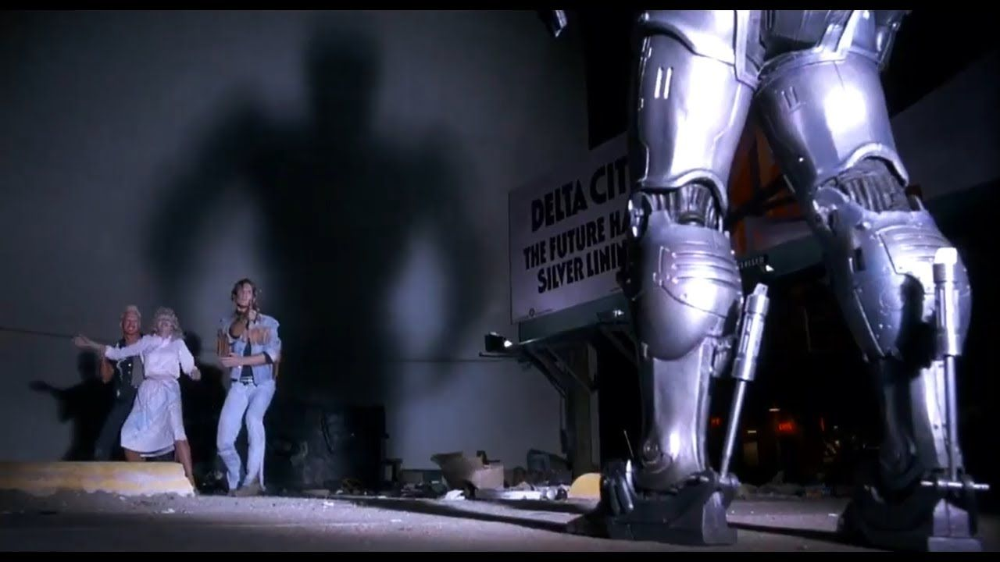
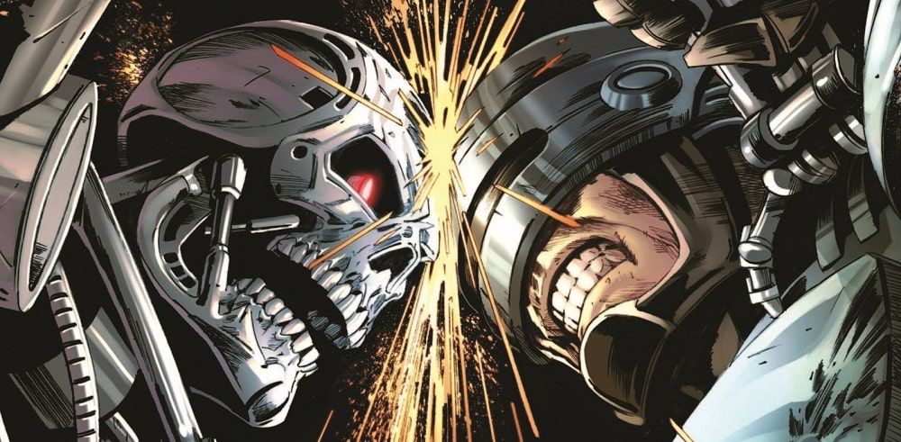

Cyborg
Un cyborg (de l'anglais « cybernetic organism », traduisible par « organisme cybernétique ») est un être humain ou à la rigueur un autre être vivant intelligent, en science-fiction — qui a reçu des greffes de parties mécaniques ou électroniques.
Le terme s'emploie surtout en science-fiction ou en futurologie ; aujourd'hui, utiliser le terme, notamment pour des personnes ayant reçu des prothèses, peut être perçu comme de mauvais goût par les intéressés.
 


